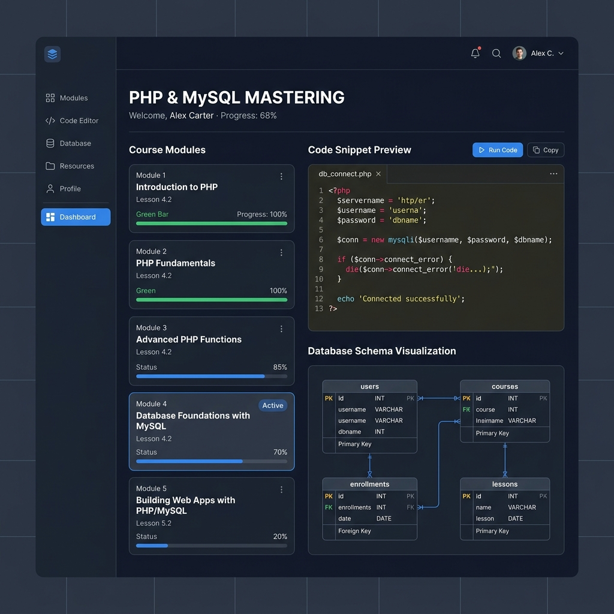
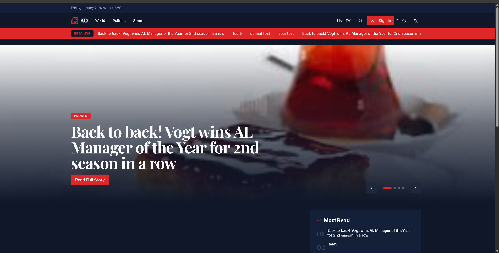
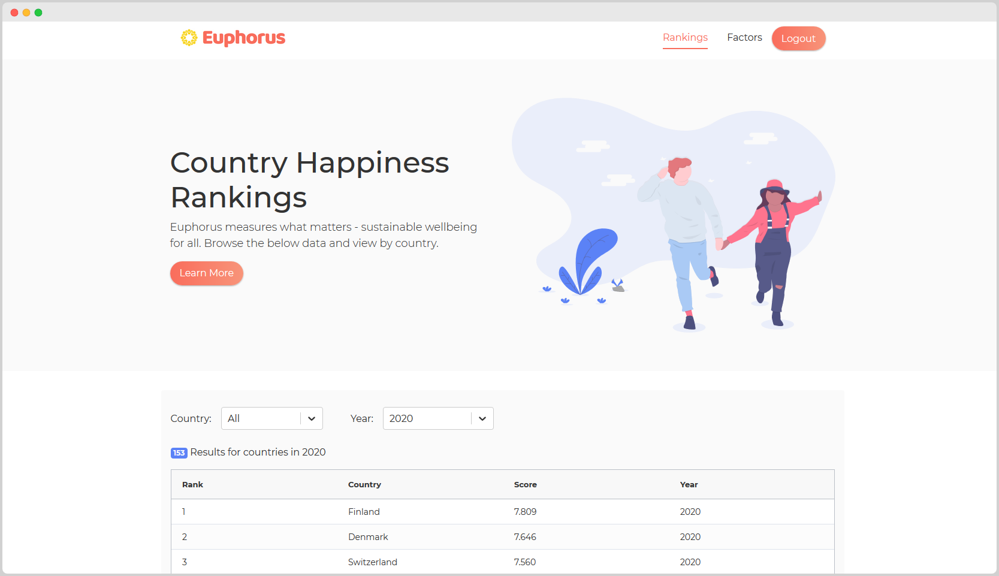
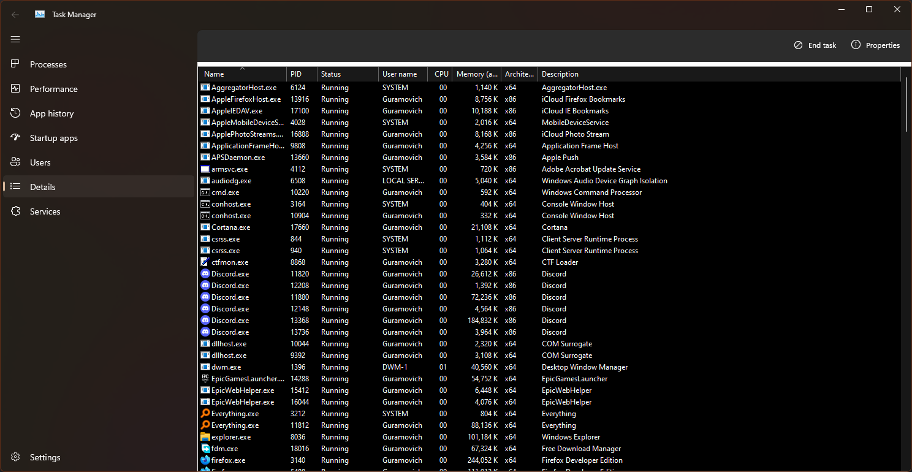
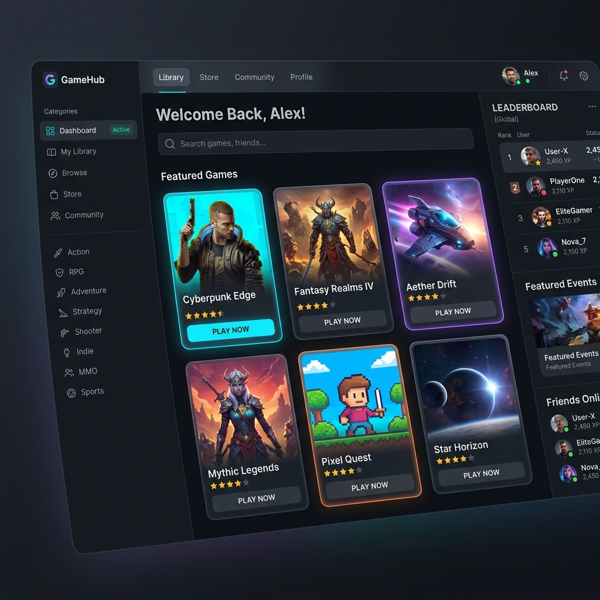
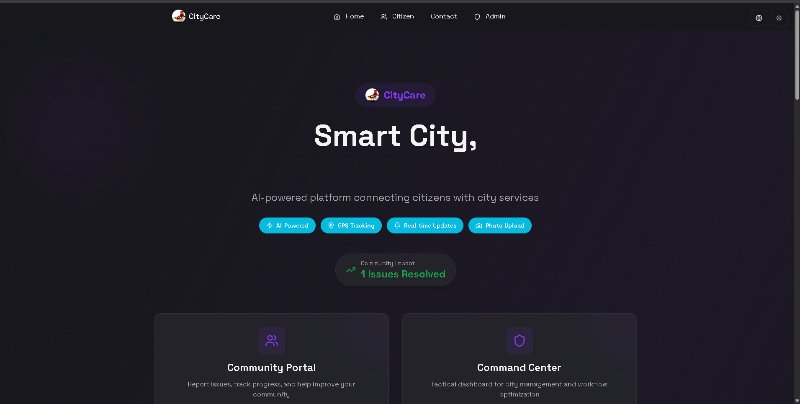
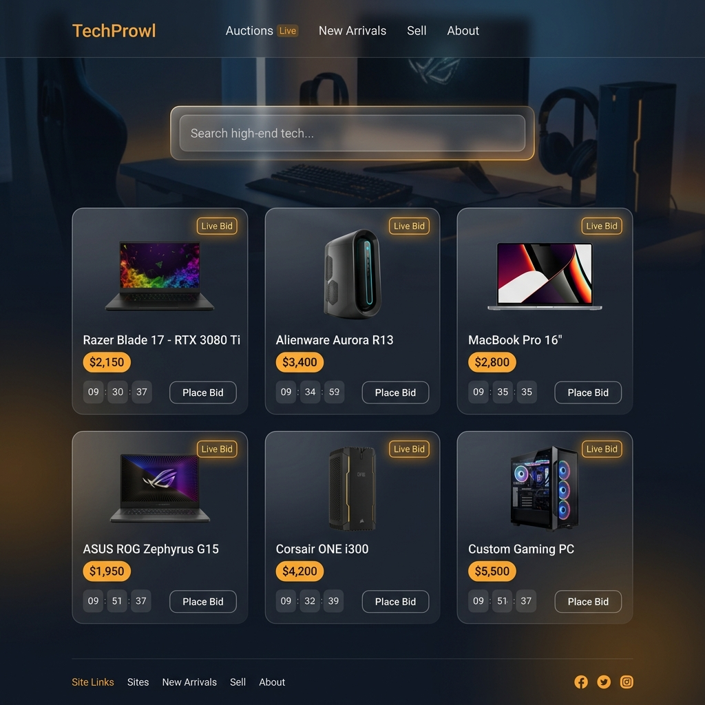
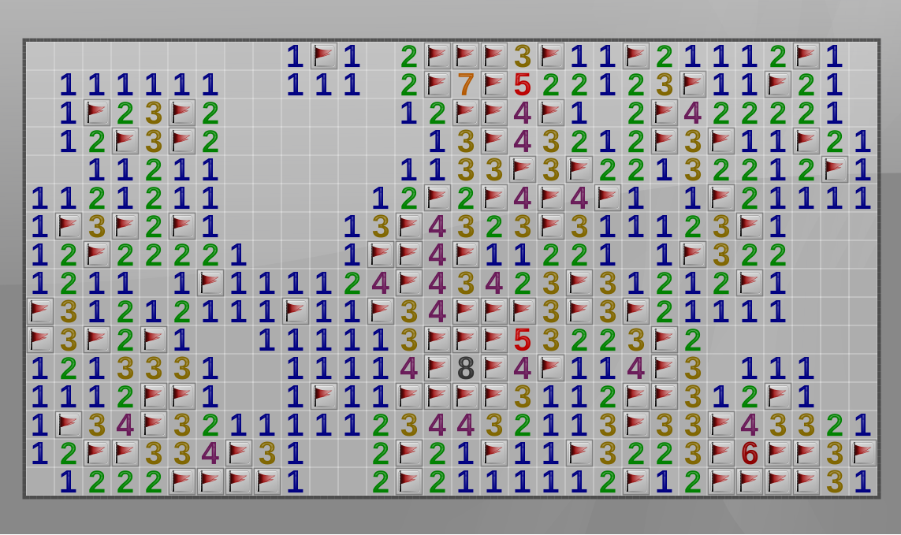

San Andreas Crime Map
A PHP and MySQL final project with login, registration, sessions, role-based routing, incident APIs, a live map, and an admin CRUD dashboard.
CodeSelected from my GitHub repositories: full-stack systems, UI projects, Python apps, and algorithm work.

A PHP and MySQL final project with login, registration, sessions, role-based routing, incident APIs, a live map, and an admin CRUD dashboard.
Code
A large multi-page healthcare website with appointment, portal, medicine, checkup, news, signup, and feedback flows built with HTML, CSS, and JavaScript.
Code
A JavaScript browser music player with a structured HTML/CSS interface, playback script, and song assets for a polished media UI.
Code
A Python desktop music player using Tkinter and Pygame, with playlist management, playback controls, seek support, shuffle, repeat, and a custom UI.
Code
A PHP and MySQL gaming platform with secure authentication, dynamic game catalogs, difficulty categories, and leaderboard-style functionality.
Code
A TypeScript smart-city reporting platform concept for municipal issue tracking, status updates, and citizen communication.
Code
A Python encryption/decryption utility with reusable crypto helpers, encrypted JSON output, and a dedicated application script.
Code
A Python Minesweeper implementation with an AI player focused on inference, safe moves, and algorithmic game-solving logic.
Code